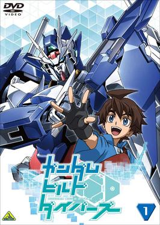

Mobile Suit Gundam was developed by animator Yoshiyuki
Tomino and a changing group of Sunrise creators with the
collective pseudonym of Hajime Yatate. The series was
originally entitled Freedom Fighter Gunboy (or Gunboy) for
the robot's gun, with teen boys the primary target
demographic. Early production had a number of references to
freedom: the White Base was originally "Freedom's Fortress",
the Core Fighter was the "Freedom Wing" and the Gunperry was
the "Freedom Cruiser". The Yatate team combined the English
word "gun" with the last syllable of the word "freedom" to
form the portmanteau Gundom. Tomino changed it to Gundam,
suggesting a unit wielding a gun powerful enough to hold
back enemies like a hydroelectric dam holding back water. In
keeping with the concept, Gundams are depicted as prototypes
or limited-production, with higher capabilities than
mass-produced units.
Mobile Suit Gundam TV series the plot is Set in a
fictional universe (Universal Century year 0079
according to the Gundam Calendar), the Principality of
Zeon has declared independence from the Earth
Federation, and subsequently launched a war of
independence called the One Year War. The conflict has
directly affected every continent on Earth, also nearly
every space colony and lunar settlement. Zeon, though
smaller, has the tactical upper hand through their use
of a new type of humanoid weapons called mobile suits.
After half of all humanity perishes in the conflict, the
war settled into a bitter stalemate lasting over 8
month.
The story begins with a newly deployed Federation
warship, the White Base, arriving at the secret research
base located at the Side 7 colony to pick up the
Federation's newest weapon. However, they are closely
followed by Zeon forces. A Zeon reconnaissance team
member disobeys mission orders and attacks the colony,
killing most of the Federation crew and civilians in the
process. Out of desperation, young Amuro Ray
accidentally finds the Federation's new prototype
arsenal—the RX-78 Gundam, and manages to beat back Zeon
forces. Scrambling everything they can, the White Base
sets out with her newly formed crew of civilian recruits
and refugees in her journey to survive
On their journey, the White Base members often encounter
the Zeon Lieutenant Commander Char Aznable. Although
Char antagonizes Amuro in battle, he takes advantage of
their position as Federation members to have them kill
members from Zeon's Zabi family as part of his revenge
scheme. Amuro also meets ensign Lalah Sune with whom he
falls in love, but accidentally kills when facing Char.
When the Federation Forces invade the Fortress of A Baoa
Qu to defeat the Zeon forces, Amuro engages on a final
one-on-one duel against Char due to both blaming the
other for Lalah's death. Having realized he forgot his
true enemy, Char stops fighting to kill the last
surviving Zabi member, Kycilia Zabi. Amuro then reunites
with his comrades as the war reaches its end.
1981-1982
Mobile Suite Gundam Compilation Movies is the
retelling of the tv series
1985-1986
Mobile Suit Zeta Gundam Tv Series is set in the
year Universal Century (UC) 0087, eight years after the
events of Mobile Suit Gundam (0079), and four years
after the events of Mobile Suit Gundam 0083: Stardust
Memory (0083 to 0084) the series follows a rebel group
called the Anti-Earth Union Group (AEUG) as they try to
defeat the Titans, an elite task force of the Earth
Federation designed to hunt down Zeon remnants but which
ruthlessly kills anyone demanding equal rights for the
space citizens in cold blood.
The story of Zeta Gundam is told through the viewpoint
of Kamille Bidan, a civilian teenager and amateur mobile
suit pilot whose parents are engineers working for the
Earth Federation and the Titans. While traveling to the
Green Noa colony to meet his parents, Kamille is
insulted by and strikes a Titans officer named Jerid
Messa. Following an AEUG attack led by Quattro Bajeena
on the colony to capture a trio of Gundam Mk-II mobile
suits undergoing field tests, Kamille takes the
opportunity to steal Messa's Mk-II to repel the attack
and follows Quattro back to the AEUG mothership Argama.
The Titans, under the order of Bask Om, take Kamille's
parents in an attempt to force the return of the stolen
Gundam Mk-II's. Jerid, unaware of the hostage plot,
mistakenly kills Kamille's mother. Because of this, and
many other reasons, Kamille eventually joins the AEUG.
As the war escalates, Kamille encounters people from all
sides of the conflict, including brainwashed Titans,
artificial Newtypes and the leaders of Anaheim
Electronics, who are secretly funding the AEUG. The AEUG
eventually launch a full-scale attack on the Earth
Federation's assembly at Dakar, leading to an Earth
Sphere civil war. Quattro reveals himself to be Char
Aznable and presents evidence of the Titans' tyranny
including using G3 nerve gas on a defenseless colony.
The Earth Federation court soon rules the Titans'
actions to be illegal and backs the AEUG in hunting down
Titans leader Jamitov Hymem.
After losing the support of the Earth Federation, the
Titans turn to their original enemy, remnants of the
Principality of Zeon now known as Axis Zeon, to form an
alliance to regain control of the Earth Sphere. Axis
Zeon's leader Haman Karn contacts the AEUG, using the
civil war of the Earth Federation at hand to politically
ask for the control of Side 3, the former Zeon colony.
Axis involvement and Jamitov's assassination by Jupiter
Fleet commander Paptimus Scirocco soon leads to a battle
over the colony headquarters of the Titans, Gryps, which
has been modified to be a colony laser. The war ends
when Kamille, piloting the titular mobile suit Z Gundam,
kills Scirocco in battle and the AEUG sinks Scirocco's
flagship and most of the Titans' fleet. However, Kamille
himself is psychologically broken and although survives
without any physical harm to him or the Zeta Gundam,
becomes mentally unstable with signs of memory lapse
and/or insanity.
The series concludes with both the AEUG and Earth
Federation, after suffering considerable losses over the
course of the war, facing the full force of Axis Zeon,
1986-1987
Mobile Suit Gundam ZZ Tv Series the plot is As
the continuation of Mobile Suit Zeta Gundam, this series
once again follows the story of the Anti Earth Union
Group (AEUG) battleship Argama after Mobile Suit Zeta
Gundam's final episode. To fight off the Axis Zeon, now
called the Neo Zeon, Captain Bright Noa recruits a group
of teenage junk collectors led by the loudmouthed but
powerful Newtype Judau Ashta to pilot the Argama's
mobile suits. Now sporting a line-up of the behemoth ZZ
Gundam and the returning Zeta Gundam, Gundam Mk-II and
the Hyaku Shiki, the group is nicknamed the Gundam Team.
As such, this became the first of a number of Gundam
series where a team of Gundam mobile suits fight
alongside each other regularly. The climax takes place
at Side 3 in the Battle of Axis.
Out of the major Mobile Suit Zeta Gundam characters,
Captain Bright Noa and Axis leader Haman Karn are
featured prominently in Mobile Suit Gundam ZZ; Hayato
Kobayashi, Kamille Bidan, Fa Yuiry, Wong Lee, Yazan
Gable, Mineva Lao Zabi, and the children Shinta and Qum
are featured in various episodes as well; Sayla Mass,
who had appeared in the first series but had no speaking
role in Mobile Suit Zeta Gundam, also appeared in
several episodes of Mobile Suit Gundam ZZ; Char
Aznable's planned appearance was canceled when Tomino
was given the go-ahead to do the Mobile Suit Gundam:
Char's Counterattack film. Yoshiyuki Tomino's original
plan for the show which involved Char's return was never
revealed, nor does Tomino himself remember it. Also,
aside from the openings and story recap/preview episode,
Amuro Ray does not make an appearance in the series
either.
1988
Mobile Suit Gundam: Char's Conterattact Movie
the plotIn UC 0093, Char Aznable has returned to lead
Neo Zeon. As the film opens, Char's forces have arranged
to drop the asteroid Fifth Luna on the Earth. Special
task force Londo Bell, whose members include veteran
soldiers Amuro Ray and Bright Noa, attempt to prevent
the catastrophe. Char is successful and the asteroid
crashes into Lhasa, Tibet.
Earth Federation Prime Minister Adenaur Paraya and his
teenage daughter Quess narrowly escape the crashing
asteroid. Their space shuttle meets with Londo Bell's
command ship, the Ra Cailum, which has just finished
collecting Amuro's new mobile suit, the RX-93 Nu Gundam,
and Amuro's close friend Chan Agi. The Nu Gundam is
equipped with new “psycho-frame” technology, which
amplifies Newtype abilities. Bright is reunited with his
young son Hathaway, who was also on the escaping
shuttle. Adenaur instructs Bright to deliver him to the
colony Londenion for some important business. While on
board, Quess becomes smitten with Amuro, and Hathaway
develops a crush on Quess.
On the Londenion colony, Adenaur's business is revealed
to be a secret meeting with Char and other Neo Zeon
leaders to arrange a treaty; the Neo Zeon will gain the
asteroid Axis in exchange for disarming their fleet.
While relaxing on the colony with Quess and Hathaway,
Amuro recognizes Char and confronts him. Overhearing the
two men argue, Quess becomes enamored of Char's
philosophies and leaves the colony with him, much to
Hathaway's distress.
Quess turns out to be a Newtype and a naturally talented
mobile suit pilot. Char takes advantage of her unstable
nature and manipulates her feelings to use her as a
weapon against Amuro. Char reveals that the treaty with
the Federation is a ruse. The Neo Zeon forces ambush the
Federation fleet at the supposed disarmament, and Axis
is sent on a collision course with the Earth. Londo Bell
attempts to stop the asteroid using Axis’ stockpile of
nuclear weapons, but only succeeds in splitting the
asteroid into two pieces.
A furious battle between Londo Bell, the Federation, and
Neo Zeon erupts. Quess descends into madness and
violence while piloting the psycho-frame-equipped mobile
armor Alpha Azieru. Hathaway steals a mobile suit and
futilely tries to convince Quess to stop fighting and
come with him. Chan kills Quess to protect Hathaway from
the girl's insane attacks but is herself killed by
Hathaway in a rage over Quess's death. Amuro and Char
duel in their psycho-frame mobile suits, the Nu Gundam
and MSN-04 Sazabi, and Amuro defeats his long-time
rival. With Char's escape pod in tow, Amuro desperately
attempts to push back the descending Axis asteroid,
aided by Federation and Zeon suits alike. The power of
the Nu Gundam's psycho-frame amplifies Amuro's Newtype
abilities to an unbelievable level. Amuro, Char, and the
Nu Gundam vanish in a massive flare of light as both
halves of Axis are pushed away from the Earth.
Mobile Suite SD Gundam Movie 1988,1989,1991,1993
1989
Mobile Suit Gundam 0080: War In the Pocket QVA 6
Episiodes is a side story to the main Gundam franchise
continuity.The Gundam series is set in a fictional
calendar era known as "Universal Century" and it
establishes that there is a so-called "One Year War"
between the Earth Federation and Principality of
Zeon—the setting for the original series—, and War in
the Pocket is set in the last days of the war.
In Universal Century 0079, Zeon intelligence has
identified a prototype Federation Gundam under
development in a Federation base in the Arctic. Elite
Zeon MS commandos are dispatched to destroy the
prototype, but before they can accomplish their mission
the Gundam is launched into space. When the Gundam turns
up in a Federation R&D base inside the neutral space
colony Side 6, the Principality launches a covert
operation to destroy the Gundam utilizing the commando
team originally dispatched to assault the Arctic base,
including young rookie Bernard "Bernie" Wiseman.
However, the raid fails and the entire team is killed
except for Bernie.
After crashing his mobile suit, Bernie manages to
befriend Alfred "Al" Izuruha, an elementary school boy
enamored with a romantic vision of warfare and excited
by Bernie's status as a mobile suit pilot regardless of
his allegiance, and Al's neighbor Christina "Chris"
Mackenzie, secretly the Gundam test pilot. As Bernie
tries to repair his damaged mobile suit while hiding out
within the station, he develops a close friendship with
Al and slowly becomes infatuated with Chris, both pilots
remaining unaware of each other's true natures.
As time passes, Bernie discovers that Zeon will destroy
Side 6 with a nuclear weapon if he cannot destroy the
prototype Gundam. Feeling that he has no choice if the
station is to be saved, Bernie takes his mobile suit and
goes to engage the Gundam. Believing Side 6 to be under
Zeon attack, Chris is ordered to pilot the Gundam in the
station's defense, and she and Bernie engage in a
destructive battle within the station. Al discovers that
the Zeon ship carrying the nuclear weapons was captured,
meaning Bernie has no more reason to fight. Alfred goes
to try and stop Bernard, only to see Bernie's mobile
suit destroyed and an injured Christina pulled from the
heavily damaged Gundam, which leaves Al horrified.
Afterwards, Chris tells Al that she will be leaving Side
6, and asks Alfred to say goodbye to Bernard for her,
still unaware that she had actually killed him. Al does
not have the heart to tell her the truth and agrees to
her request. The series closes with Al's school holding
an assembly in which the principal talks about the
effects of war. Al, remembering his time with Bernie,
begins to weep uncontrollably during the speech. Al's
friends, misunderstanding his grief, try to reassure him
that another "cool" war is bound to happen soon..
Moible Suite SD Gundam QVA 9 episodes from
1989-1991
1991-1992
Mobile Suit Gundam F91 Movie is set 30 years
after the events of Mobile Suit Gundam: Char's
Counterattack and none of the characters that had
previously appeared in the series were present in the
film.alt="Mobile Suit Gundam F91"
In the year U.C. 0123, the military arm of Cosmo
Babylonia, the Crossbone Vanguard, attacks the Earth
Federation colony Frontier IV. Student mechanic Seabook
Arno and his friend Cecily Fairchild are caught in the
middle of the fighting as the Federation garrison is
quickly overwhelmed. Seabook and Cecily lead a group of
refugees into the lower levels of the colony, where they
meet up with Seabook's father, Leslie. As the group
boards a lifeboat, Seabook catches sight of Cecily's
father, Theo, attempting to abduct her and tries to
intervene. However, the Crossbone Vanguard arrives and
takes Cecily, who is actually Berah Ronah, part of the
Ronah family who are the leaders behind Cosmo Babylonia.
Seabook is forced to retreat to the lifeboat while
Leslie stays behind to help a lost child.
Cecily is taken to meet her real father Carozzo and
grandfather Meitzer, who both dream of overthrowing the
corrupt Earth Federation and replacing it with a more
just aristocracy. Cecily is reluctant to join them, but
feels she has no choice. Meanwhile, the lifeboat manages
to reach the neighboring colony Frontier I, but it is
also under attack by the Crossbone Vanguard. Seabook's
group then comes across the Space Ark, a Federation
training ship carrying the inoperative Gundam F91. Due
to the confusion caused by the Crossbone Vanguard's
surprise attack, the Space Ark is run by a barely
experienced skeleton crew with no available pilots.
Pressed into Federation service, Seabook works on
repairing the F91 and discovers it was developed by his
mother, Monica. The crew is able to repair the F91 just
in time to repel an assault by the Crossbone Vanguard,
forcing them to retreat.
Seabook then uses the F91 to return to Frontier IV,
where Cosmo Babylonia has already repaired most of the
damage to the colony and has fully occupied it. He
infiltrates the Ronah estate and makes contact with
Cecily. However, he is forced to flee without her when
the guards pursue him. Leslie helps Seabook escape
Frontier IV, but he suffers a mortal head injury in the
process and dies on the return trip to Frontier I.
Cecily joins the Crossbone Vanguard under Zabine
Chareux's command. He helps train Cecily to be a mobile
suit pilot and warns her that there are several factions
within Cosmo Babylonia working against each others'
interests, with one faction working on a secret
superweapon codenamed "Bug". Seabook returns to Frontier
I, where he is again forced by the Federation to help
defend the colony against an impending attack by the
Crossbone Vanguard. Instead, Seabook and the crew of the
Space Ark secretly decide to desert and flee to the
Moon.
Cecily is assigned the advanced Vigna Ghina mobile suit
and accompanies the Crossbone Vanguard as they break
into Frontier I. After a brief but intense skirmish, the
Crossbone Vanguard are once again forced to withdraw.
Seabook encounters Cecily in battle and she decides to
defect upon discovering her friends are still alive.
Carozzo then arrives at Frontier I and deploys the Bugs,
automated war machines designed to specifically hunt
down humans. He believes that Earth's population must be
purged to preserve its environment, and intends to use
Frontier I as a testing ground for the Bugs. Seabook and
Cecily work together to destroy the Bugs, with Cecily
destroying their mothership. Angered, Carozzo deploys in
his own mobile armor, the Rafflesia, and battles Seabook
and Cecily. The Vigna Ghina is destroyed, ejecting
Cecily into space and Seabook destroys the Rafflesia in
response. Zabine arrives on the scene, but decides to
spare Seabook and the Space Ark due to his disagreement
over Carozzo's use of the Bugs and Rafflesia. After a
desperate search, Seabook is able to find and rescue
Cecily as the Space Ark arrives to pick them up.
Mobile Suit 0083: Stardust QVA: 13 episodes and a
compliation Movie in 1992 the plot is The year is
Universal Century 0083, and three years have passed
after the One Year War ended with the Principality of
Zeon's defeat. The Delaz Fleet, a group of Zeon
remnants, launches an attack on the Earth Federation's
Torrington Base, stealing the prototype Gundam GP02A
"Physalis", a mobile suit with nuclear launch
capability. Kou Uraki, a test pilot at Torrington Base,
becomes the pilot for the Gundam GP01 "Zephyranthes",
and joins the Pegasus-class carrier Albion as it pursues
the stolen GP02A in order to stop the Delaz Fleet's
ultimate goal: "Operation Stardust".
1993
Mobile Suit SD Gundam Tv series 8 epsiodes
Mobile Suit Victory Gundam Tv series Victory
Gundam is set in UC 0153, and succeeds the Federation
Force and Crossbone Vanguard conflict of Mobile Suit
Gundam F91. The Earth, still loosely controlled by the
greatly weakened Earth Federation, comes under attack by
BESPA, the armed forces of the space colony-based
Zanscare Empire. Only a ragtag resistance movement,
League Militaire, stands in BESPA's way as they swiftly
conquer much of space and start their invasion of Earth,
with the advanced mass-produced mobile suit, the Victory
Gundam, as the League Militaire's secret weapon.
However, BESPA's power continues to grow, using violent
means, including public executions with guillotines, to
strike fear into those living on Earth.
Living peacefully on Earth in the remote Eastern
European town of Kasarelia, 13-year-old Üso Ewin and his
childhood friend Shahkti Kareen are soon thrown into the
conflict when they encounter ace BESPA pilot Chronicle
Asher. Soon, Üso finds himself joining forces with
Marbet Fingerhut and the rest of the League Militaire,
piloting the Victory Gundam against the BESPA, and soon
discovering the horrors of war.
1994
Mobile Fighter G Gundam Tv Series Unlike previous
series in the Gundam franchise which are set in the
"Universal Century" timeline, Mobile Fighter G Gundam
takes place in an alternate "Future Century" universe.
Within this timeline, much of mankind has abandoned a
ruined Earth to live in space colonies. The countries on
Earth have corresponding colonies just outside the
planet's atmosphere. Rather than fight wars for
political and social dominance, the colonies agree to
hold a "Gundam Fight" tournament every four years. Each
country sends to Earth a representative piloting a
highly advanced, humanoid mobile fighter called a
Gundam. The Gundams compete with one another in
one-on-one battles, under a strict set of rules, until
only one fighter remains; the nation represented by the
winner earns the right to rule all of space for that
period.Each Gundam is controlled directly by the user
within the cockpit using the "Mobile Trace System", a
gesture recognition and feedback mechanism whereby the
Gundam mimics the pilot's own body motion, combat
skills, and weapon-wielding capabilities. G Gundam opens
at the start of the 13th Gundam Fight in Future Century
year 60 and follows Neo Japan's Domon Kasshu, fighter of
his nation's Shining Gundam and bearer of the coveted
"King of Hearts" martial arts crest.Aside from winning
the tournament, Domon's mission is to track down his
fugitive, older brother Kyoji, who allegedly stole the
experimental Devil Gundam from Neo Japan's government,
leaving their mother dead and their father (Dr. Raizo
Kasshu) to be arrested and placed in a cryogenic state
Under orders from Major Ullube Ishikawa, Domon and his
childhood friend and mechanic Rain Mikamura travel from
country to country, challenging each one's Gundam while
searching for clues to the whereabouts of Kyoji and the
Devil Gundam. Domon's initial matches with Neo America's
Chibodee Crocket, Neo France's George DeSand, Neo
China's Sai Sai Ci, and Neo Russia's Argo Gulskii end in
draws, gaining mutual respect among the fighters. As
they encounter Gundam pilots who had come in contact
with the Devil Gundam, Domon and Rain learn of its
unique cellular properties to regenerate, multiply, and
evolve by infecting organic matter and causing violent
behavior in living things.The duo then journey to Neo
Tokyo, a city decimated by the Devil Gundam's army of
mobile weapons. Domon reunites with his esteemed martial
arts instructor Master Asia, who is also the champion of
the last Gundam Fight, the former King of Hearts, and
one-time leader of an elite group of Gundam fighters
called the Shuffle Alliance. After Domon and Rain help
the city's survivors defend their last outpost in
Shinjuku, Master Asia reveals himself as a servant of
the Devil Gundam, having also gained control over
Chibodee, George, Sai Sai Ci, and Argo using Devil
Gundam (DG) cells. The four remaining members of the
Shuffle Alliance intervene and vow to destroy their
previous leader for his crimes. Ultimately, the Alliance
members offer their lives in purging the DG cells from
Domon's four comrades and bestow each of them with a
Shuffle Alliance crest as their successors. Kyoji and
the enormous Devil Gundam eventually appear from beneath
the ground of Shinjuku but shortly thereafter vanish
alongside Master Asia. As the Shuffle Alliance trains in
the Guiana Highlands for the Gundam Fight finals, Master
Asia and the Devil Gundam reappear. With the help of his
friends and a new ally in Neo Germany's masked warrior
Schwarz Bruder, Domon defeats the Devil Gundam. When the
Shining Gundam becomes incapacitated during the battle,
Domon desperately manages to activate a newly acquired
God Gundam, escape Master Asia, and make his way to the
finals set in Neo Hong Kong.
The Gundam Fight finals are presided over by Wong
Yunfat, Neo Hong Kong's prime minister, and the current
ruler of the space colonies and Earth. Wong chooses to
have the qualifying nations battle in one-on-one and tag
team preliminary matches to reach a battle royale on
Lantau Island, where the tournament is to end with the
winner facing the defending champion Master Asia. Having
gained possession of the Devil Gundam, Wong secretly
plots to revive and control it as his trump card to
inevitably maintain his own power over space. Domon and
his companions make their way to the battle royale while
several truths concerning the Devil Gundam are unveiled.
Rain's father, Dr. Mikamura, eventually explains that
the Devil Gundam (originally called the Ultimate Gundam)
was constructed by Dr. Kasshu to rejuvenate the dying
Earth. Jealous of his genius colleague, Dr. Mikamura had
Neo Japan's officials attempt to confiscate Kasshu's
creation. To prevent the military from using his
father's invention for its own agenda, Kyoji fled with
and crash-landed the Gundam on Earth, where its computer
malfunctioned, triggering its malevolent activity.
Ullube subsequently had Dr. Kasshu arrested, framed
Kyoji as a criminal, and used Domon and Rain as pawns in
recovering the Gundam. In a separate confession, Master
Asia discloses to Domon that, having been distressed by
the utter destruction wrought by the Gundam Fights, he
planned to use the Devil Gundam to wipe out humanity and
allow Earth to heal naturally. The battle on Lantau
Island culminates with Domon fatally besting Master Asia
in a final confrontation, while Kyoji and Schwarz
sacrifice themselves so that Domon can attack the Devil
Gundam's cockpit and disable it once again. Though the
schemes of both Wong and Master Asia are foiled, Ullube
quietly claims the Devil Gundam and transports it to Neo
Japan's space colony for his own purpose. Having been
corrupted by DG cells with ambitions of supreme power,
Ullube kidnaps Rain and places her into the Devil
Gundam's core to act as its energy source. The hulking
monstrosity then merges with the colony and begins
absorbing Earth itself. As the entire world's Gundams
unite to assault the Devil Gundam from the outside, the
Shuffle Alliance breaks inside the colony and destroys
Ullube. Finally, Domon professes his love for Rain and
releases her from the core. Invoking the power of the
King of Hearts, the couple vanquishes the Devil Gundam
once and for all.
1995
Mobile Suite Gundam Wing Tv Series In the distant
future, Mankind has colonized space, with clusters of
space colonies at each of the five Earth-Moon Lagrange
points. Down on the Earth, the nations have come
together to form the United Earth Sphere Alliance. This
Alliance oppresses the colonies with its vast military
might. The colonies wishing to be free, join together in
a movement headed by the pacifist Heero Yuy. In the year
After Colony 175, Yuy is shot dead by an assassin,
forcing the colonies to search for other paths to peace.
The assassination prompts five disaffected scientists
from the Organization of the Zodiac, more commonly
referred to as OZ, to turn rogue upon the completion of
the mobile suit prototype Tallgeese.
The story of Gundam Wing begins in the year After Colony
195, with the start of "Operation Meteor": the
scientists' plan for revenge against OZ. The operation
involves five teenage boys, who have each been chosen
and trained by each of the five scientists, then sent to
Earth independently in extremely advanced mobile suits
(one designed by each of the scientists) known as
"Gundams" (called such because they are constructed from
a rare and astonishingly durable material called
Gundanium alloy, which can only be created in outer
space). Each Gundam is sent from a different colony, and
the pilots are initially unaware of each other's
existence.
The series focuses primarily on the five Gundam pilots:
Heero Yuy (an alias, not to be confused with the
martyred pacifist), Duo Maxwell, Trowa Barton, Quatre
Raberba Winner and Chang Wufei. Their mission is to use
their Gundams to attack OZ directly, in order to rid the
Alliance of its weapons and free the colonies from its
oppressive rule. The series also focuses on Relena
Peacecraft, heir to the pacifist Sanc Kingdom, who
becomes an important political ally to the Gundam pilots
(particularly Heero) over the course of the series.
1996
After War Gundam X Tv Series the plot is that in
the year is A.W. 15. 15 years after the end of the 7th
Space War which led to the catastrophic destruction of
much of the world, the surviving residents of Earth try
to make a living as best they can in the
post-apocalyptic landscape. Mobile Suits and weapons
left over from the war fall into the hands of civilians
as well as other organizations on the planet. In an
effort to keep the past from repeating itself, Jamil
Neate brings together a crew of Vultures to search for
Newtypes and protect them from being exploited. As they
try to carry out this task, an old government rises from
the ashes to try and unify the Earth as other forces
slowly fan the flames of war once more between the newly
formed New United Nations Earth and the Space
Revolutionary Army. Now the crew of the Freeden face a
multitude of enemies as they try to prevent another
catastrophic war.
Mobile Suite Gundam: the 08th MS Team QVA 12
Episiode The series is set in Universal Century 0079 in
the jungles of Southeast Asia. The Earth Federation and
the Principality of Zeon are fighting a brutal guerrilla
war for control of the area and its resources. Zeon's
best hope for victory in the region rests with an
experimental mobile armor and its pilot, Aina Sahalin.
Meanwhile, the Earth Federation Army receive
reinforcements in the form of Ensign Shiro Amada, newly
named commander of the 08th MS Team. Aina and Shiro know
each other from a mutual rescue in space, but when Shiro
discovers that Aina is in fact the pilot of the Zeon
mobile armor he is arrested for treason.
The Federation offers Shiro one chance at redemption: he
must take the 08th MS Team deep into Zeon held territory
to find Zeon's hidden base. With the Zeon backed into a
corner, and the Federation dependent on Shiro and his
team for victory, the star crossed lovers must decide
where their true allegiances lie: with each other, or
with their respective sides.
1997
Gundam Wing: Endless Waltz QVA 3 episiodes the
plot is set in the year After Colony 196, and the
battles between Earth and the space colonies have ended.
Treize Khushrenada is dead and OZ has come to an end.
This gives birth to the Earth Sphere Unified Nation
(ESUN) and the Preventers. Seeing they won't be needed
anymore, the Gundam pilots (except Chang Wufei) send
their suits into the sun. However, this peace would not
last, for a rebellion occurs on the newly completed
colony, L3 X-18999. Led by seven-year-old Mariemaia
Khushrenada, Treize's illegitimate daughter, the
rebellion kidnaps Relena Darlian, now the Vice Foreign
Minister of the ESUN, during a diplomatic mission to
X-18999. As the Gundam pilots investigate further, they
discover that Mariemaia is merely a puppet controlled by
her grandfather Dekim Barton, a former advisor to
martyred colony leader Heero Yuy, who is using X-18999
to go through with the original Operation Meteor, as a
contingency plan in case the ESUN doesn't comply. The
Gundam pilots must prevent Dekim from seizing power over
the ESUN. The Gundams are retrieved from their course to
sun to Earth's orbit thanks to Quatre and the Maganacs.
The pilots use their Gundams one last time to fight
against Dekim's forces, not killing anyone. In the end,
Dekim is killed by one of his own soldiers, Earth and
its colonies are at peace once again and all mobile
suits (including the Gundams) are forever destroyed and
never seen again.
1998
Mobile Suite Gundam: the 08th MS Team Compliation movie
Gundam Wing: Endless Waltz compliation Movie
1999
Turn A Gundam Tv series the plot for Turn A
Gundam follows the character Loran Cehack, a young
member of the Moonrace. Selected as part of a
reconnaissance mission to determine whether the Earth
was fit for resettlement, Loran lands on the continent
of North America, spends two years living on Earth as
the chauffeur to the Heim family, and grows attached to
its people. With the expectation of a peaceful
resettlement operation from his people, he and a pair of
his close friends sent down with him confirm that the
Earth is now fit for the Moonrace to make their return.
He's taken by surprise when the Moonrace intends to
return to Earth via an offensive with mobile suits, and
their first attack sparks a violent conflict between
Earth and moon.
The night of the first attack, Loran is at the White
Doll, an enormous humanoid statue, for a coming-of-age
ceremony. When the Moonrace attacks and the battle in
town can be seen from a distance the children panic. In
the midst of this panic, the White Doll shatters,
revealing a metallic figure within, and the shrine
collapses around it. During the panic, Loran recognizes
the White Doll as a mobile suit, and succeeds in
applying his knowledge of the Moonrace's mobile suits to
pilot it. The death of the Heim patriarch in the attack
pulls the family and Loran into the budding war; Loran
becomes the designated pilot of the White Doll, and its
discovery prompts the excavation of further mobile suits
in the various "mountain cycles" covering the Earth. As
the Moonrace's invasion rapidly turns into a
full-fledged war against the increasingly armed
Earthrace, it becomes clear that this state of affairs
is divisive among both groups; while the Moonrace's
queen Dianna Soreil attempts to negotiate with the local
leaders for a peaceful solution by which the Moonrace
can come to reside on the Earth, the militaristic among
both populations interfere with the negotiations again
and again, forcing the war to continue as opposed to
accepting a compromise.
2000
G-Saviour Live-action Tv Movie the plot is The
year is Universal Century 0223. The former Earth
Federation has collapsed, and the space colonies have
shaken off their colonial pasts and now refer to
themselves as independent space "Settlements". In this
new power scheme two factions have emerged: the Congress
of Settlement Nations (CONSENT), which is largely made
up of the former Earth Federation government and Sides
2, 3, 5, 6, 7, and the Settlement Freedom League,
composed of Sides 1, 4, and the Lunar Cities.
Mark Curran is an ex-CONSENT pilot who now works for
Hydro-Gen, an independent research facility located at
the Deep Face Trench. While out on a harvesting run,
Mark saves CONSENT lieutenant Tim Holloway. Shortly
after the lieutenant is saved, the lab is commandeered
by the Congressional Armed Forces, led by Mark's former
superior, Jack Halle. As the facility's security system
is triggered, Mark goes off to investigate. Mark saves
one of the intruders, Cynthia Graves, from Jack's firing
squad after she surrenders, while another intruder is
killed by the gunfire.
The CONSENT is in the midst of a global food shortage,
with its military leaders threatening force to take over
the neutral Side 8 Settlement of Gaea. General Garneuax
asks Mark to interrogate Cynthia, who is revealed to be
a Gaean rebel. Mark helps Cynthia escape, who shows him
an enzyme that allows food to grow underwater, which can
solve the food shortage. The two meet up with Cynthia's
interns, Franz Dieter and Kobi, and the group escape
into space along with Mark's fiancée Mimi Devere.
Meanwhile, Jack frames Mark for the murder of a CONSENT
soldier, whom Jack had killed himself. The group arrives
at the Side 4 Settlement of New Manhattan, meeting with
Philippe San Simeone, an old acquaintance of Mark, and a
member of the Illuminati, a private paramilitary
organization. Philippe entrusts Mark with a new
prototype mobile suit, the G-Saviour, but he refuses to
pilot it. Mark changes his mind to help clear a path
through a debris field on the way to Gaea.
Arriving at Gaea, Mark and Cynthia meet with Chief
Councilor Graves, Cynthia's father. Graves tell them
that a Congressional Armed Forces fleet is on its way to
Gaea, looking to apprehend the two and the enzyme
sample. After seeing Mark and Cynthia share a kiss, Mimi
hacks into Gaea's defense system, causing debris
clearing guns to fire at a CONSENT ship. After Mark
concludes that a mobile suit carrier is on its way to
attack Gaea, Cynthia asks Mark to lead Gaea's mobile
suit force against the approaching CONSENT forces. Both
sides launch their mobile suit forces, with CONSENT
greatly outmatching Gaea's obsolete RGM-196 Freedom
mobile suits. Jack sorties out in the CAMS-13 MS-Rai,
with Mark engaging him in battle with the G-Saviour.
Congressional Armed Forces enter Gaea, with Kobi being
critically wounded while trying to protect the enzyme
sample. After retrieving the sample, Garneuax reveals
his true intentions to destroy the sample and implement
a policy of selective starvation across the CONSENT.
With Gaea's forces dwindling, Philippe and the
Illuminati's forces arrive and push back the CONSENT
attack. Jack is defeated by Mark and the G-Saviour, who
enter Gaea to disable the remaining CONSENT forces.
Garneuax and his forces, along with Mimi, escape from
the Settlement in a Gaean space shuttle. Mimi reveals
that she switched out the enzyme sample, which is back
in the possession of Cynthia, as the shuttle is shot
down by CONSENT forces. With Garneuax dead and Jack
incapacitated, the Congressional Armed Forces withdraw
from Gaea. Councilor Graves gives a speech stating that
Side 8 will stay independent, while Mark returns to
Earth with Cynthia.
2002
Mobile Suite Gundam SEED Tv series the plot is
The series is the first of the Gundam franchise set in
the "Cosmic Era" in which humankind is divided between
normal Earth dwelling humans, known as "Naturals", and
the genetically altered super-humans known as
"Coordinators". The primary conflict of the story plot
derives from jealous hatred by Naturals of the abilities
of Coordinators, leading to hate crimes, and eventually
the emigration of almost all Coordinators who flee into
space to live idyllic lives on giant orbital space
colonies called PLANTS of their own design. War
eventually breaks out between Earth and the PLANTS. The
Earth is divided between two major factions, the Earth
Forces formed from most of the natural born human
nations, primarily the Eurasians and the Atlantic
Federation, and a natural human supremacist group known
as Blue Cosmos with its slogan, "For the preservation of
our blue and pure world". The Earth Forces are not a
unified alliance, and infighting and mistrust exist
between their various nation states. The second major
Earth nation is the Orb Union, a staunchly politically
neutral and isolationist nation located on small Pacific
Ocean islands ruled by a hereditary monarchy and still
contains Coordinator citizens.
Two major events precede the story, known as the Bloody
Valentine tragedy that initiated war between the PLANTS
and the Earth Forces when one of the PLANT space
stations, Junius-7, is destroyed by a nuclear bomb. The
second event is the counterattack by the PLANTS that
buries Neutron Jammers deep into Earth's crust that
halts all nuclear reactions and long range radar and
radio, causing most areas of earth to go without
electricity or communication, and requiring mobile suits
to rely on rechargeable batteries.
The PLANTS are a technological power house, developing
many new technologies that give them equal power to
Earth despite their very small population. It is the
invention of the Mobile Suits that give their military
the edge in the beginning of the war.
The story begins in the neutral Orb Union owned space
colony Heliopolis, where five advanced mobile suits for
the Earth Forces war effort are developed in secret in
exchange of sharing of their technical data with the
neutral Orb Union military. Additionally, Heliopolis
constructs a unique carrier battleship, the Archangel,
to base the five mobile suits from for the Earth Forces.
The colony is attacked by ZAFT forces, the military of
the PLANTS, with the objective of stealing the new
units. During the incursion an Orb Union student and
Coordinator named Kira Yamato, upon seeing his friends
in danger, pilots the GAT-X105 Strike mobile suit to
fend off the invaders but the colony is critically
damaged in the ensuing fight. As Heliopolis
disintegrates, the survivors board the Archangel, and
begin their journey to the Alliance base in Alaska.
During the journey to Earth, Kira pilots the Strike to
counter a series of attacks by ZAFT but is seemingly
killed by his childhood friend, ZAFT soldier Athrun
Zala, during one of their battles in which he also is
nearly killed. Kira survives the attack and is taken by
a blind priest to one of the PLANT space colonies, home
to the Coordinators to recover. The Archangel arrives in
Alaska but ZAFT launches a full-scale attack on the base
overpowering their enemies. Unknown to ZAFT, the Earth
forces knew of this attack ahead of time. They planned
to sacrifice the Alaska base along with the Archangel in
order to destroy ZAFT's army using a weapon of mass
destruction hidden underneath the Alaska base.
Kira goes to Alaska with the ZGMF-X10A Freedom, a highly
advanced, nuclear powered, and Neutron Jammer proof ZAFT
mobile suit stolen by the PLANT pop star Coordinator
Lacus Clyne, daughter of PLANT Supreme Council Chairman
Siegel Clyne. Using the Freedom, Kira is able to help
the Archangel flee the destruction of the Alaska base.
The Archangel flees to the neutral country of the Orb
Union. The Archangel and a new ship, the Orb Union ship
Kusanagi leave Earth for space where they then join
Lacus Clyne's rebel faction and their stolen ZAFT
battleship, the Eternal (meant to carry the Freedom and
Justice mobile suits) to form the Three Ships Alliance
with the common goal of ending the war between the
Naturals and Coordinators. In the midst of the conflict,
Athrun learns that Kira survived and searches for him
under orders to recover the Freedom Gundam, and is given
an equally powerful prototype, the ZGMF-X09A Justice.
However, after learning of Patrick Zala's, Athrun's
father and the radical militant faction leader of the
PLANT Supreme Council, plan to commit genocide, Athrun
deserts him and joins the Three Ships Alliance. In a
final battle, the Earth Forces deploys nuclear weapons
equipped with Neutron Jammer Canceler technology copied
from stolen data on the Freedom and Justice Gundam's
power systems. The Earth Forces intend to destroy the
PLANT space colonies but are stopped by ZAFT's GENESIS,
a super weapon microwave laser designed to commit
genocide on the Naturals. The Three Ship Alliance
intervenes to defeat the GENESIS weapon ending the
battle. The war ultimately ends as a peace treaty is
signed.
2003
Superior Defender Gundam Force Tv series also
know as SD Gundam the plotis set in the futuristic city
of Neotopia, a happy peaceful place where humans and
robots co-exist, until the Dark Axis, an evil force from
another dimension, arrives.
Aware of the Dark Axis in advance, Neotopia established
the secret Super Dimensional Guard to combat the
invaders while keeping the conflict a secret from the
public. A young boy named Shute becomes involved
accidentally in the first battle between the Dark Axis
and the SDG's Gundam Force robot hero, Captain Gundam.
Shute's friendship with the Captain is critical to
activating Captain's Soul Drive, the mysterious power
source that is the key to victory. As the fighting
continues, Gundams from other dimensions such as Zero
and Bakunetsumaru, arrive to join the battle as allies.
As the Gundam Force beats back the mono-eyed invaders
the battle spreads beyond Neotopia into the dimensions
of Lacroa and Ark, leading into a final confrontation
with the supreme leader of the Dark Axis - General
Zeong.
2004
Mbvile Suite Gundam SEED Destiny Tv Seriesthe
plotGundam SEED Destiny sets the story two years after
the original series and it starts when the leader from
Orb, Cagalli Yula Athha, reunites with the PLANTs'
Supreme Council chairman Gilbert Durandal to discuss the
construction of new mobile suits made for the military
organization ZAFT. Three of them are stolen by a group
called Phantom Pain, which is controlled by the Blue
Cosmos terrorist organization. Cagalli's bodyguard
Athrun Zala joins ZAFT pilot Shinn Asuka to stop
them.During the fight, ZAFT's battleship Minerva is
ordered to destroy the ruins of a space colony to
prevent it from crashing into Earth. They find out that
rogue ZAFT soldiers are controlling the colony in order
to crash it into Earth. After failing to completely
destroy the colony, a second war starts between the
factions, the Earth Alliance and ZAFT, once news has
spread that ZAFT soldiers caused the colony to collide
on Earth. The neutral country of Orb allies with the
Earth Alliance, with the former having also joined Blue
Cosmos. This leads these three faction to confront the
ZAFT soldiers several times, with Athrun having returned
there.
Later in the war, the Archangel battleship interferes in
the fights between ZAFT and the Earth Alliance's
faction. Allied with the Archangel, Cagalli fails to
stop her country from fighting and the Archangel
intervenes. Athrun becomes disaffected after Gilbert
Durandal orders the destruction of his friend Kira
Yamato and the Archangel, deeming them as enemies. He
defects with Meyrin Hawke when Durandal frames him as a
traitor. Cagalli is able to regain leadership from Orb,
causing the Blue Cosmos' members to flee to space. The
leader of Blue Cosmos, Lord Djibril, orders the super
weapon Requiem to be fired which destroys several space
colonies of PLANT, resulting in many deaths. The crew of
the Minerva successfully kills Lord Djibril and capture
the Requiem. Gilbert Durandal then announces the
"Destiny Plan", a plan where a person's job or task will
be based on their genetics, and uses the Requiem to
destroy anyone who opposes him. This brings Shinn and
the crew of the Minerva into direct conflict with the
Archangel faction. Kira and Athrun with their new mobile
suits a0nd their allies, defeat the ZAFT forces and
destroy the Requiem. Durandal is killed by one of his
own followers, Rey Za Burrel.
The series' ending was expanded in both the original
video animation and the last compilation film. Soon
after Durandal's death, the Earth Alliance, ZAFT, and
the Orb Union meet to end the war, with Lacus Clyne
acting as the negotiator. After fighting between each
other various time in their mobile suits, Kira and Shinn
meet in person for the second time and promise to join
forces for a better future.
2007
Mobile Suite Gundam 00 Tv series is split in two
season the plot for the first season is set 2307 AD. As
a result of the depletion of fossil fuels, humanity had
to search for a new source of power. The power was found
in the form of multiple Dyson rings (massive arrays of
solar power collectors) orbiting Earth, and supported by
three orbital elevators, each one serving one of the
three "power blocs" on the planet, namely the Union
(Union of Solar Energy and Free Nations), controlling
the Americas, Australia, New Zealand, and Japan; the
Human Reform League , controlling nearly all of mainland
Asia besides the Middle East along with most of Oceania;
and the AEU (Advanced European Union), which controls
mainland Europe as well as many islands in the North
Atlantic and Arctic Oceans. With this nearly
inexhaustible source of energy benefiting only the major
powers and their allies, constant warfare erupts around
the globe among minor countries for fuels and energy.
Countries that once economically relied on the sale of
fossil fuels have plunged into poverty. Some even
believe that solar energy threatened the "promised land
of God", resulting in the 20-year Solar Wars. This chaos
led to the formation of a private military organization,
called Celestial Being (ソレスタルビーイング, Soresutaru
Bīingu), dedicated to eradicating war and uniting
humanity through the use of four advanced machines
called Gundams.Mobile Suit Gundam 00 follows four mobile
suit pilots termed Gundam Meisters (ガンダムマイスター,
Gandamu Maisutā), sided with Celestial Being. The main
protagonist is 16-year-old Setsuna F. Seiei, a taciturn
Gundam pilot who grew up in the war-torn Middle Eastern
Republic of Krugis (which seems to be based on the
territory of Kurdistan).
Unable to counter Celestial Being's superior technology,
the three major powers eventually unite into the United
Nations Army in order to counter Celestial Being's armed
interventions. In order to fight the Gundams, the United
Nations Army employed the help of Laguna Harvey. Harvey,
a Celestial Being intelligence agent turned traitor,
provides them with 30 GN-X, mobile suits equipped with
pseudo-GN Drives. As the United Nations resist Celestial
Being's interventions, a second team of Gundams, known
as Team Trinity, appears and assists in the Meisters'
eradication of war, albeit in a much more cruel and
cold-blooded fashion.
Alejandro Corner, a former Celestial Being observer who
plans to make use of the chaos and destruction created
by Celestial Being to rule a reconstructed world,
subsequently takes over Veda, Celestial Being's
supercomputer which is believed to be located in the
moon somewhere. Without the tactical aid from the
organization's artificial intelligence, Celestial Being
is easily overwhelmed and overpowered by the GN-X units
and their superior numbers.
The United Nations Army initiates Operation Fallen
Angels to destroy the Gundams, having discovered the
location of the Meisters' mothership, Ptolemaios. During
the operation, Ali Al-Saachez kills Lockon Stratos after
a climactic battle (Lockon Statos was just injured in a
previous battle). Alejandro Corner, in his unique custom
mobile armor Alvatore, attacks Setsuna as the GN-X units
proceed to destroy the Ptolemaios and the remaining
Gundams. Setsuna struggles with the monstrous Alvatore,
but in the end succeeds in killing Alejandro. Graham
Aker, an ace pilot of the United Nations Army, then
challenges Setsuna to a fight, seeking revenge for his
fallen comrades and questioning the purpose of the
Gundams' existence. The fight results in the destruction
of the GN-Flag, while the Exia is heavily damaged.
In season the plot is Four years have passed since the
final battle between Celestial Being and the UN Forces.
Humanity, having established the Earth Sphere
Federation, forms an autonomous peace-keeping force, the
A-Laws, separate from and above the formal Federation
army. Given unfettered discretion, the A-Laws is charged
with the duty to further unify nations, enforce the will
of mankind, and dispose of terrorist cells. Unknown to
the general public, however, is that the A-Laws misuse
their power and employ inhumane tactics to oppress
freedoms, doctrines, and ideologies, all in the name of
'unity'.
Meanwhile, Setsuna tries to confront the A-Laws by
himself with his battered Gundam Exia, but is easily
overpowered by their newer models. He is soon rescued by
Tieria Erde, piloting his new mobile suit, the Seravee
Gundam. By combining the GN Drives of Exia and 0 Gundam,
Celestial Being's engineers manage to complete Aeolia's
plans for an advanced mobile suit with twin GN drives –
the 00 Gundam – which is entrusted to Setsuna. To pilot
the two remaining new units, Lockon Stratos' twin
brother is invited to assume his brother's codename and
former position as the pilot of the Cherudim Gundam, and
after Allelujah Haptism is rescued from the prison he
was being detained in during the timeskip, he assumes
the command of Arios Gundam. Saji Crossroad reluctantly
joins Setsuna to pilot the upgraded 00 Raiser and
confront his girlfriend Louise Halevy who has joined the
A-Laws.
Unknown to Celestial Being and the A-Laws, a third party
is manipulating both sides of the conflict. This group
call themselves "Innovators", composed of Alejandro
Corner's former assistant Ribbons Almark, and his six
subordinates. Subsequently, it is revealed that Aeolia
Schenberg's plan is to ensure humanity's survival; unite
the world's factions through Celestial Being's armed
interventions and then advance humanity into deep space
and undergo Innovation, a trans-human process.
After uncovering the truth about Ribbons' true
intentions, Celestial Being joins forces with dissident
members of the A-Laws to stop their oppression and bring
the fight to the Innovades. Having been continuously
exposed to the GN particles of the fully completed
Gundam 00, Setsuna undergoes Innovation, becoming the
first true Innovator with powers far greater than
Ribbons and his group. The conflict ends in a final
showdown between Ribbons and Setsuna with the latter
emerging victorious. Following the final battle, the
Federation disbands the A-Laws and works towards a
genuine global peace while Celestial Being returns into
the shadows until another intervention is needed.
2010
Mobile Suite Gundam Unicorn Ova 7 episiode 1
Special Episiod from 2010- 2014 and a Compilation Tv
series in 2016 the plot the series begins in U.C. 0001,
at the very beginning of human space colonization, when
Laplace, the residential space station of the
Federation's Prime Minister, is destroyed by an
anti-federation group during a ceremony hosted by the
Prime Minister ushering in the Universal Century
Calendar. The main story takes place in UC 0096, sixteen
years after the end of the One Year War, three years
after the events of Mobile Suit Gundam: Char's
Counterattack, and 27 years before Mobile Suit Gundam
F91.
The story revolves around Banagher Links, a seemingly
normal boy living and going to school in the space
colonies. His life changes one day when he meets a girl
named Audrey Burne, as it results in his becoming the
pilot of a new Gundam that has connections to an item
that is a potential threat to the Federation's existence
called "Laplace's Box."
Mobile Suite Gundam 00 the Movie: A Wakeing of the
Trailblazer
the plotTwo years after the defeat of the "Innovators"
and A-Laws, an unknown alien fragment lands on a
research station and reactivates it, causing it to head
towards Earth. In Celestial Being's Asteroid Base, Ian
Vashti greets his wife, Linda, after her 2-year
assignment and unloads two new GN Drives and a new
incomplete Gundam, the GNT-0000 00 Qan[T]. Saji
Crossroad is taking care of Louise Halevy, who is still
under medical care in a hospital due to physical changes
by the Innovators. Marina Ismail and Shirin Bakhtiar
inspect a colony construction facility but their shuttle
is attacked by assassins. However Setsuna F. Seiei
arrives and destroys them, with Lockon in the cockpit
stopping another assassin from killing Marina,
afterwards he leaves with Setsuna.
Meanwhile, the Earth Sphere Federation has found the
research station heading towards earth and sends out
GN-XIV's, led by Andrei Smirnov, to destroy it. Kati
Mannequin arrived on board the Celestial Being station
with Patrick Colasour and encounter Veda along with its
surviving Innovades, now serving the Federation to
maintain the mothership. They later meet the newest
emerging Innovator, Captain Descartes Shaman. When the
probe ship is still heading towards Earth despite being
hit by GN missiles, Descartes heads out and pilots the
GNMA-Y0002V Gadelaza, successfully destroying the ship,
with debris falling to Earth. Soon after, Earth
experiences strange events, with electronic vehicles and
devices operating on their own. A young girl Amia Lee
arrives at her home, only to be attacked by a man (Sky
Eclipse) in a space suit.
Billy Katagiri meets with Mehna Carmine to analyze Amia
whose body has been partially assimilated with a new
metal. They hypothesize that the events occurring are
related to the alien metal lifeform, now dubbed the
Extraterrestrial Living-metal Shape-shifters (ELS).
During this time, Setsuna and Louise's quantum
brainwaves give them ominous feelings about upcoming
events. Setsuna's concern magnifies when the Ptolemaios
crew is unable to contact Allelujah and Marie.
Saji witnesses a blackout in the hospital with Louise.
They scream as a man in a spacesuit appears before them.
He is about to touch Louise when Setsuna appears and
shoots the man's visor, revealing him to be the same
type of Innovade as Ribbons Almark. The attacker is only
stopped with a plastic explosive. In Mongolia, a
traveling Allelujah Haptism and Marie Parfacy are
attacked and chased by living technology infected by the
ELS. Lockon Stratos arrives in the GN-002RE Gundam
Dynames Repair and helps destroy them and brings them
back to their mothership, the Ptolemaios.
The same Jupiter research station that had been
destroyed reappears and the Celestial Being forces moves
to intercept it. Setsuna heads out in the 00 Raiser
Condenser Type, along with Lockon in his new Gundam, the
Zabanya, and Allelujah, paired with Marie in the Gundam
Harute, confront the ELS. Problems began to arise when
Setsuna is unable to fight the ELS due to quantum
brainwave interference. The 00 Raiser begins to undergo
assimilation, however Tieria Erde arrives in the Raphael
Gundam and rips out 00 Raiser's infected left arm,
allowing Setsuna and the team to escape. Unknown to both
the Federation and Ptolemaios crew, the ELS had begun
launching its forces from Jupiter's Big Red Spot,
sucking in Io and Ganymede.
The Federation forces later travel to Mars in order to
discover the ELS's intentions, with Descartes heading
out first in the Gadelaza. However most of its ships and
Mobile suits were assimilated, and Descartes ends up
being assimilated as well, killing him in the process.
Celestial Being arrives too late to save the Federation
soldiers and engages in battle against the ELS. Setsuna
executes Trans-Am Burst in an attempt to communicate
with the ELS, theorizing that this is the "dialogues to
come" that Aeolia Schenberg was conditioning humanity
for. Unfortunately, Setsuna falls victim to a mental
attack from the ELS and is rendered comatose in the
middle of battle. Tieria reveals Raphael Gundam's
backpack, GN-008RE Seravee Gundam II, and rips 00
Raiser's cockpit from the frame, handing it to Lockon as
Tieria tries to hold off the ELS with his quantum
brainwaves. With the ELS surrounding him, Tieria
self-destructs his Gundam to take out ELS with him. The
Sol Brave Squadron, led by Graham Aker, arrive and help
Celestial Being escape. Tieria's conscious mind returns
to Veda and Feldt Grace desperately awaits at Setsuna's
side to awaken. After the battle, the Ptolemaios crew
and the Earth Sphere Federation witness the appearance
of a large moon-size ELS, determining that it will
arrive at Earth in 92 days.
With most of the civilians being informed of the
situation and heading towards shelters, Saji tells
Louise that he's going to the Orbital Elevator to help
fight the ELS as the last line of defense. On the day of
the ELS's arrival, the Federation Fleet gathered
alongside Forces from the Federation Members and launch
a counterattack against the ELS with a missile barrage,
which is rendered futile by the ELS' adapting. Kati, in
charge of the operation, orders to fire the ship's main
cannon, which damages the ELS superstructure. During
this time, Tieria requests that Ian Vashti install a
miniature Veda terminal in the cockpit of 00 Qan[T] to
handle the massive amounts of information that would
result from linking with the ELS again.
The battle begins, many of the Federation's Baikal-class
ships are assimilated by the ELS, who subsequently
created their own copies of the technology. Zabanya and
Harute arrive to assist the ESF and member forces in
battle. Despite the much needed backup, the ELS still
overwhelms the allied forces and assimilates many ships
and Mobile Suits. Andrei Smirnov notices one of the ELS
ships heading straight for Earth and self-destructs his
GNX to destroy the ELS ship at the cost of his life.
Meanwhile, on board the Ptolemaios 2, a still-comatose
Setsuna lies in a dream-like state. There, he has
visions of the first Lockon, Christina Sierra, and
Lichtendahl Tsery. Setsuna then sees the flower that
Feldt gave him and finally wakes up with Feldt at his
side. He sorties in the GNT-0000 00 Qan[T] for battle,
while Feldt returns to the bridge.
In battle, Patrick's GN-XIV is hit by an ELS and is
slowly assimilated. He prepares to self-destruct before
saying goodbyes to Kati, when Setsuna blasts Patrick's
GNX, saving him from assimilation. With a large number
of ELS appearing, the Harute is eventually assimilated
and Allelujah and Marie are forced to eject. Setsuna
attempts to communicate with the ELS via the Twin
Drive’s quantum effect, but it is to no avail as the ELS
constantly thwart Setsuna's attempts. Tieria, now a
small hologram inside of the 00 Qan[T], tells Setsuna
that Trans-Am is necessary for the dialogues. Graham
Aker, now partially assimilated, decides to believe in a
better future for humanity and sacrifices himself to
create a large hole using Trans-Am, allowing Setsuna to
enter the core of the ELS ship. The Battle begins to
transform into a massacre with swarms of ELS even
attacking the orbital elevator where Saji is working at.
After Setsuna establishes contact, he realizes the
attack was a misunderstanding as assimilation was their
only means to understand humanity. It also revealed that
the ELS's original homeworld had been consumed by a red
giant star and they began searching the universe for a
new home. Along the way they reformed various planets
and eventually found a new home, eventually setting out
into the vast reaches of space to explore the universe.
Through Setsuna's quantum brainwaves, the true intention
of the ELS's arrival to Earth was understood, and the
battle was halted. Setsuna becomes humanity's liaison
and uses the 00 Qan[T] to quantize to the ELS homeworld.
The ELS then uses Setsuna's vision of a flower to alter
the superstructure of their mother ship, ending the
battle.
In a flashback, a much younger Aeolia Schenberg is shown
speaking with E. A. Ray (the human base for Ribbons
Almark) of his plan, and comments that humanity must
unite if they hope to have any chance of reaching the
future. Fifty years later, the flower in space is now a
deep space station for intergalactic travel, with the
ELS now co-existing with humanity. A ship named after
Sumeragi is being prepared for travel, being crewed by
Innovators. As a news correspondent is talking on
camera, a Tieria type Innovade can be seen floating by.
In an undisclosed countryside, a blind and older Marina
is playing the piano and senses someone entering. He
reveals himself as Setsuna, now an ELS/Innovator hybrid,
fulfilling his promise to see her again. Setsuna tells a
crying Marina that he finally understands her message of
peace, and they share an emotional embrace. Outside, an
ELS winged 00 Qan[T] covered in flowers emits GN
Particles in an angelic fashion.
2011
Mobile Suite Gundam AGE Tv Series 49 episiodes
the series is seperated into four arcs with the first
three focusing on a different protagonist and the the
last arc focusing on all the three previous protagonists
2013
Gundam Build Fighters Tv Series 25 episodes the
sereis is set in alternate universe to our own where
1980s, the success of the series Mobile Suit Gundam
resulted in an economic boom due to sales of the Gundam
model kits, or "Gunpla" (ガンプラ, Ganpura), dubbed the
Gunpla Boom. Years later, with the success of the second
Gunpla Boom, special tournaments called Gunpla Battles
are established throughout the world to see which
customized Gunpla and its builder are the best. These
incredibly popular Gunpla Battles culminate in an annual
global tournament.
The story of the first series revolves around Sei Iori,
a young Gunpla Builder and student who has a dream of
becoming the best Gunpla Fighter in the tournament and
someday become as good as his father. As the only child,
his family owns a small Gunpla shop and his talent is
well-honed, however his weak piloting abilities have led
him to a series of first-round losses. But one day, he
meets a strange boy named Reiji, who helps him out.
Reiji gives him a jewel, promising that he will come to
Sei's aid if wished enough. Together, both of them will
tackle the world of Gunpla Battle and compete in the
tournament using Sei's customized Gunpla, the GAT-X105B
Build Strike Gundam.
2014
Gundam Reconguista in G Tv series 26 episodes the
plot of the series is In Regild Century 1014, 1,014
years after the end of the Universal Century, a young
member of the Capital Guard named Bellri Zenam (Beruri
Zenamu), charged with protecting the orbital elevator
Capital Tower, encounters and helps capture a highly
advanced mobile suit, the G-Self and its pilot, Aida
Surgan (ア, Aida Surugan), while defending the tower
from space pirates called the Pirate Corps. Feeling a
connection with both the G-Self and its pilot, Bellri is
able to control the mobile suit, operable only by a
select few.
The G-Self is recaptured by the Amerian spaceship
Megafauna, and Bellri subsequently helps fend off
attacks by the "Capital Army" - a militaristic faction
from the Capital Tower advocating for rearmament, led by
Colonel Cumpa Rusita - and its eccentric Captain Mask.
The Megafauna returns to the Capital Territory to
negotiate a ceasefire and alliance to prepare for an
alleged threat from space, but the unexpected launch of
an Amerian fleet causes hostilities to resume.
The Megafauna flees to space, arriving at the holy land
of Sankt Porto atop the Capital Tower, which has been
occupied by Amerian forces seeking control of utilities
distributed by the Capital Territory. Recognizing the
growing military strength of Earth's factions, the moon
colony of Towasanga sends their Dorette Fleet to begin
the "Reconguista", a recolonization of Earth. In the
ensuing chaos, the Megafauna as well as a pair of
Amerian and Capital Army ships journey to the moon.
At Towasanga, Bellri and Aida learn that they are the
last surviving members of the royal Rayhunton family,
sent to earth as children to protect them from the
Dorette Fleet. Seeking the truth behind the conflict,
Aida commands the Megafauna to the Venus Globe colonies,
the source of the Photon Batteries and other advanced
technology that has led to Earth's rapid militarization.
After a battle with the G-IT Corps - another faction
supporting the Reconguistra - they discover Cumpa Rusita
is the Towasangan who brought them to Earth and provided
Earthnoids with the blueprints for spaceships and mobile
suits with the intention of spurring armed conflict and
strengthening the human race.
The Megafauna returns to Earth with upgraded mobile
suits and finds the war has escalated further. Ameria
has allied with the Dorette Fleet while Captain Mask
allies with the G-IT Corps to ensure his historically
oppressed race has a place in the new world order. A
chaotic final battle ensues at the Guiana Highlands
among the remains of the past wars and Cumpa Rusita is
killed in the crossfire between Bellri and Captain Mask.
Having rediscovered the horrors of war throughout their
adventures, the crew of the Megafauna force a ceasefire
with technology from the Universal Century.
Some months later, a joint crew of Earthnoids and
Spacenoids from multiple nations start a journey around
the world to promote peace and understanding. Bellri
disembarks in Japan and climbs Mount Fuji, intending to
see the world on his own two feet.
Gundam Build Fighters Try tv Series 25 episodes
the plot is the same as Gundam Build Fighters but with
different people
2015
Mobile Suite Gundam: Iron-Blooded Orphans tv
series 50 episodes the series is set It is the year 323
P.D. (Post Disaster), more than 300 years after a
disastrous, interplanetary conflict known as the
"Calamity War". Mars has been successfully terraformed
and colonized by humans. However, even with the
technological advancements, the humans on Mars crave
freedom against the government of Earth and seek to
improve their livelihoods. Furthermore, while most of
Mars' nations have received autonomy, the planet is
virtually dependent on Earth for economic development
with many living in impoverished conditions.
Kudelia Aina Bernstein, a Martian noblewoman, employs
the civilian security company Chryse Guard Security
(CGS) to transport her to Earth to negotiate the
independence of her nation, Chryse, from Earth. But the
Earth Military organization Gjallarhorn, attacks CGS in
an attempt to halt the Martian independence movement.
During the attack, Orga Itsuka, the leader of the Third
Army Division within CGS, which is composed of children,
decides to rebel against the adult higher-ups who had
escaped and left the child and teen foot-soldiers to
fight and die as disposable decoys. As all hope seems
lost, a young orphan under Orga's command named Mikazuki
Augus enters the battle, piloting a hastily repaired
mobile suit: the legendary Gundam Barbatos. After
repelling Gjallarhorn's attack, Orga and the rest of the
Third Army Division dispose of the adult higher-ups who
betrayed them and take control of CGS, refounding it as
the mercenary company "Tekkadan" (Japanese for "Iron
Flower").
In Tekkadan's first job, they accept to escort Kudelia
to Earth for her to take part in the negotiations with
the government of Arbrau, the superpower that rules over
Chryse. However, Gjallarhorn's continuous attempts to
stop their progress leads Tekkadan to join forces with
Teiwaz, a business conglomerate that operates around
Jupiter. Under Teiwaz's protection and being secretly
assisted by McGillis Fareed, one of the top echelons of
Gjallarhorn with his own agenda, Tekkadan successfully
takes Kudelia to Earth, and safely escorts her to
Arbrau's capital where she successfully negotiates more
economic freedom for Mars, while McGillis takes
advantage of their success to overthrow his own adoptive
father and bolster his position within Gjallarhorn.
Some years later, Tekkadan establishes itself as a
prominent military company, while Kudelia establishes a
mining company in Chryse, working to improve the
inhabitants' conditions and McGillis moves forward with
his agenda to reform Gjallarhorn. However, one of
Gjallarhorn's factions opposing him, the Arianrhod
Fleet, led by Rustal Elion, starts working in the
shadows to sabotage both McGillis and Tekkadan. McGillis
convinces Tekkadan to help him destroy Arianrhod under
the promise that once he manages to take full control of
Gjallarhorn, he will transfer all authority over Mars to
Tekkadan, making them the de facto rulers of the planet.
However, they are defeated and forced to flee to Mars,
where McGillis is killed after a last, failed attempt to
kill Rustal and Tekkadan is disbanded after Arianrhod
launches an attack to exterminate all members and make
an example out of them, but only a few, including
Mikazuki, sacrifice themselves to hold out the enemy
long enough for the rest to escape safely.
In the aftermath several years later, Gjallarhorn
repeals its council system and reforms into a more
democratic organization, with Rustal as its head.
Kudelia becomes the chairwoman of the Mars Union and the
surviving Tekkadan members follow their separate ways
while remaining in touch, each looking to honor their
friends who died to give them a new, brighter future.
Mobile Suite Gundam Thunderbolt ONA Episodes from
2015 till 2017 The series takes place concurrently with
Mobile Suit Gundam, during the One Year War but is not
canonical to the original anime.In U.C. 0079, the Earth
Federation's Moore Brotherhood and the Principality of
Zeon's Living Dead Division engage in a fierce battle in
the "Thunderbolt Sector" (サンダーボルト宙域,
Sandāboruto Chū-iki), a shoal zone littered with debris
from destroyed space colonies, named for its frequent
electrical discharges. Since the outbreak of the war,
Zeon forces have secured the Thunderbolt Sector as it is
a vital supply route to the Zeon-aligned A Baoa Qu
asteroid fortress. The story focuses on Federation
soldier Io Fleming as he battles Zeon's best sniper,
Daryl Lorenz.
2018

Gundam Builds Drivers prologue ONA and Tv sereise
25 episodes the series is set in the near futur where
the charters play in a VRMMO base on Mobile Suite Models
Mobile Suite Gundam Narrative Movie In U.C.0096,
the conflict dubbed the "Laplace Incident" ended with
the dissolution of the Neo Zeon remnant group "Sleeves".
Both the Unicorn Gundam and the Banshee were supposedly
dismantled. With the original draft of the Universal
Century Charter revealed, the existence of Newtypes and
their promised rights have become known to the public.
One year later, in U.C.0097, the world is largely
unchanged despite these revelations. The reappearance of
the RX-0 Gundam unit 3 Phenex, "brother" to the Unicorn
and Banshee, two years after it disappeared triggers the
Federation to launch Operation "Phoenix Hunt" to capture
the mobile suit. Minister Monaghan Bakharov of the
Republic of Zeon secretly directs a Zeon unit to the
same objective through his operative Erica Yugo. Mineva
Lao Zabi, the figurehead "princess" of Zeon, calls out
Monaghan's ambitions, though she cannot directly
intervene.
The powerful corporation Luio & Co. assigns Michele Luio
and pilot Jona Basta along with the RX-9 Narrative
Gundam to assist the Federation. Michele and Jona's
childhood friend, Rita Bernal, is believed to be in
control of the Phenex. Rita, Michele, and Jona were
declared the "Miracle Children" after predicting the
colony drop from Zeon's "Operation British" at the
opening of the One Year War, saving many lives. Michele
and Jona know that only Rita displayed true Newtype
precognition. The Federation and Zeon teams detect the
Phenex within a college colony at Side 6. The two sides
race to the scene, though the Phenex is nowhere to be
found. Piloting a Sinanju Stein, Zeon pilot Zoltan
Akkanen, a failed product of the project that created
Full Frontal, attacks Jona and the Narrative Gundam and
inflicts serious damage to the colony. Zoltan summons
the II Neo Zeong mobile armor to help him destroy Jona,
and the massive armor breaches the hull of colony. The
conflict ends after the Phenex finally appears and
disrupts the encounter before escaping.
In the aftermath of the disastrous events within the
colony, Minister Monaghan instructs Erica to flee her
ship as he intends to blame the event on rogue Sleeves
remnants and have the Federation destroy the rest of the
force. Zoltan overhears the communication and murders
Erica. He suffers a psychotic break and launches in the
II Neo Zeong with no greater intent than mass
destruction. Michele reveals she orchestrated the
encounter in the colony in order to draw out the Phenex.
As teenagers, she, Rita, and Jona became victims of the
vicious Cyber Newtype experiments surrounding the Gryps
Conflict. Michele had arranged for her own adoption by
Luio & Co. after tricking Jona into helping her
sacrifice Rita to extreme experimentation. She believes
she will be absolved of her guilt over Rita when she
unlocks the key to immortality within the Phenex - the
ability of a psycho-frame to absorb the soul of a dying
person, as has happened with the Phenex and Rita, who
died after escaping with the Phenex.
The Federation fears Zoltan’s assault will cause a rain
of debris on Earth even more devastating than Operation
British. Jona, Michele, and the Federation forces sortie
to defeat Zoltan, joined by the Phenex. The II Neo Zeong
proves too powerful and is on the verge of defeating the
combined forces. Michele sacrifices herself to protect
Jona's heavily damaged Narrative Gundam. Banagher Links
arrives in the ARX-014S Silver Bullet Suppressor,
intervening to allow Jona to enter the Phenex' empty
cockpit. The united souls of Jona, Rita, and Michele
drive the Phenex's psycho-frame to contain the
destructive power of the II Neo Zeong's own
psycho-frame, killing Zoltan and saving the Earth. Jona
is released from the Phenex before it speeds away at
incredible speed, and is rescued by Banagher, who
encourages Jona that the story is not over yet. The RX-0
Unicorn Gundam, believed to have been dismantled, is
shown to be sealed away by Mineva and Banagher, in case
it needs to be called on again.
2019
Gundam Build Drivers Re:Rise ONA 26 episodes from
2019 till 2020 the plot is set in the near futur where
the charters play in a VRMMO base on Mobile Suite Models
2021
Mobile suite Gundam: Hathawayis the first Movie
in a series of movie
2022
Mobile Suite Gundam: Cucuruz Doan's Island Moive
I did now see this movie
Mobile Suite Gundam: The Witch From Mercury
On-going the video
To get more detial info on the chrarter and and on
series go to this siteThe Gundam Wiki